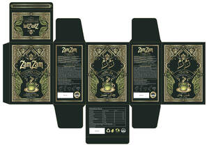

Trade Mark Journal No.2026/006 6 February 2026
UK00004324500 15 January 2026 (29,30,32)

- Class 29
- Cocoa butter for food; Rice milk; Powdered soya milk; Cacao butter for food; Rice milk [milk substitute]; Rice milk for use as a milk substitute; Milk beverages with cocoa; Milk powder for foodstuffs; Coconut milk powder; Flavoured milk powder for making drinks; Coffee cream in the form of powder; Vegetables, dried; Dried vegetables; Cooked fruits; Dried fruits; Dried fruit; Dried meat; Vegetables, cooked; Cooked vegetables; Dried mangoes; Dried seafood; Dried fruit mixes; Dried fruit products; Dried strawberries; Prepared dried fruit mixes; Boiled and dried fish; Dried prawns; Dried blueberries; Canned sliced fruits; Dried lentils; Dried okra; Dried durians; Dried fish meat; Dried beans; Dried shrimps; Dried pineapples; Dried beef; Dried edible mushrooms; Dried fish; Dried eggs; Dried coconuts; Dried fruits in powder form; Cooked meats; Dried cranberries; Dried scallops; Dried vegetables in powder form; Fruit, stewed; Stewed fruit; Frozen fruits; Cooked jackfruit; Edible dried flowers; Edible flowers, dried; Canned sliced vegetables; Pickled fruits; Canned fruits; Fruits, canned; Flakes of dried fish meat (kezuri-bushi); Dried olives; Dried fruit-based snacks; Canned cooked meat; Dried edible seaweed (hoshi-wakame); Bottled sliced fruits; Dried whelk meat; Dried lichee; Salted vegetables; Dried figs; Powdered fruits; Dried milk for food; Dried soya beans; Bottled cooked meat; Freeze-dried vegetables; Got-gam [dried persimmons]; Dried clam meat; Dried milk; Dried longan; Cooked olives; Blocks of boiled, smoked and then dried bonitos (katsuo-bushi); Fermented fruits; Dried edible seaweed; Cooked meat; Tinned fruits; Fruits, tinned; Dried pawpaws; Dried Chinese yams; Frozen cooked fish; Dehydrated vegetables; Candied fruits; Edible shavings of dried kelp (tororo-kombu); Canned vegetables; Vegetables, canned; Frozen vegetables; Fermented vegetables; Cooked dish consisting primarily of stir-fried chicken and fermented hot pepper paste (dak-galbi); Cooked beans; Dried turnip; Grilled vegetables; Cooked meat dishes; Dried persimmon (Got-gam); Dried squid; Oyster mushrooms, dried; Pickled vegetables; Processed fruits, fungi, vegetables, nuts and pulses; Klipfish [salted and dried cod]; Dried nuts; Nuts being dried; Cooked dish consisting primarily of fermented vegetable, pork and tofu (kimchi-jjigae); Edible crystallized fruits; Dried edible algae; Peeled vegetables; Cooked spinach; Dried edible daylilies; Sliced fruit; Edible dried gardenia flowers; Tinned vegetables; Vegetables, tinned. … all of the aforesaid being produced in accordance with the practices and principles of Halal.
- Class 30
- Tea; Oolong tea [Chinese tea]; Oolong tea; Rooibos tea; Chai tea; Iced tea; Tea (Iced -); Chamomile tea; Tieguanyin tea; Darjeeling tea; Herbal tea; Peppermint tea; Black tea [English tea]; Ginseng tea; Ginger tea; Jasmine tea; Tea cakes; Tea beverages; Green tea; Tea bags for making non-medicated tea; Tea for infusions; Instant Oolong tea; Tea bags; Rosemary tea; Barley tea; Buckwheat tea; Fermented tea; Tea leaves; Tea extracts; Citron tea; Flavourings of tea; Kelp tea; Tea beverages with milk; Sage tea; Tea pods; Lime tea; Lapsang souchong tea; Black tea; White tea; Teas; Iced tea (Non-medicated -); Tea essences; Linden tea; Iced teas; Yellow tea; Herb tea [infusions]; Mate [tea]; Beverages with tea base; Beverages with a tea base; Barley-leaf tea; Instant tea; Red ginseng tea; Tea mixtures; Ginseng tea [insamcha]; Tea (Non-medicated -); Tea substitutes; Herbal tea [other than for medicinal use]; Artificial tea; Instant green tea; Beverages made of tea; Japanese green tea; Non-medicinal herbal tea; Theine-free tea; Herbal teas; Iced tea mix powders; Tisanes made of tea (Non-medicated -); Tea beverages (Non-medicated -); Packaged tea [other than for medicinal use]; Chrysanthemum tea (Gukhwacha); Roasted barley tea [mugicha]; Apple flavoured tea [other than for medicinal use]; Fruit flavoured tea [other than medicinal]; Tea bags (Non-medicated -); Iced coffee; Jasmine tea bags, other than for medicinal purposes; Roasted barley tea; Lime blossom tea; Instant white tea; Orange flavoured tea [other than for medicinal use]; Instant black tea; Fruit teas; Coffee; Artificial tea [other than for medicinal use]; Jasmine tea, other than for medicinal purposes; Tea extracts (Non-medicated -); Rose hip tea; Mugi-cha [roasted barley tea]; Yuja-cha (Korean honey citron tea); Decaffeinated coffee; Flavourings of tea for food or beverages; Coffee, teas and cocoa and substitutes therefor; Herbal teas [infusions]; Caffeine-free coffee; Earl grey tea; Earl Grey tea; Tea essences (Non-medicated -); Theine-free tea sweetened with sweeteners; Roasted brown rice tea; Tea-based beverages with fruit flavoring; Drinks flavoured with chocolate; Carbonated and non-carbonated tea based beverages; Chocolate flavoured beverages; Chocolate-based beverages with milk; Tapioca flour for food; Tapioca flour [for food]; Cereal preparations coated with sugar and honey; Boiled sugar confectionery; Rice flour porridge; Potato flour confectionery; Soya flour for food; Coffee substitutes [artificial coffee or vegetable preparations for use as coffee]; Powdered starch syrup [for food]; Snack food products made from rice flour; Barley flour [for food]; Barley flour for food; Non-medicated flour confectionery coated with imitation chocolate; Non-medicated flour confectionery coated with chocolate; Chocolate for confectionery and bread; Cocoa [roasted, powdered, granulated, or in drinks]; Coffee [roasted, powdered, granulated, or in drinks]; Rice biscuits; Tapioca flour; Buckwheat flour [for food]; Buckwheat flour for food; Rice starch flour; Glutinous pounded rice cake coated with bean powder (injeolmi); Snack food products made from soya flour; Chocolate-coated rice cakes; Chocolate drink preparations flavoured with banana; Bread made with soya beans; Flour of rice; Rice flour; Mixtures of malt coffee with cocoa; Foodstuffs made of sugar for sweetening desserts; Non-medicated flour confectionery containing imitation chocolate; Bread with soy bean; Non-medicated flour confectionery containing chocolate; Flour confectionery; Tea of salty kelp powder (kombu-cha); Flavoured sugar confectionery; Glutinous rice flour; Confectionery made of sugar; Corn flour [for food]; Wheat flour [for food]; Potato flour for food; Potato flour [for food]; Snack food products made from potato flour; Boiled sugar sweetmeats; Prepared savory foodstuffs made from potato flour; Sugar, honey, treacle; Sugar confectionery; Flour for making dumplings of glutinous rice; Soya flour; Snack food products made from maize flour; Foamed sugar sweets; Sugar paste for confectionery; Sticky rice cakes (Chapsalttock); Chocolate-coated sugar confectionery; Cereal flour; Invert sugar cream [artificial honey]; Tea of parched powder of barley with husk (mugi-cha); Roasted barley and malt for use as substitute for coffee; Barley for use as a coffee substitute; Breakfast cereals flavoured with honey; Snack food products made from rusk flour; Powdered sugar for preparing isotonic beverages; Aerated beverages [with coffee, cocoa or chocolate base]; Milk chocolate teacakes; Aerated drinks [with coffee, cocoa or chocolate base]; Cocoa beverages with milk; Powdered sugar; Snack food products made from cereal flour; Almond flour; Snack foods prepared from potato flour; Rice tapioca; Wheat starch flour; Rice cake snacks; Rice cakes; Cakes (Rice -); Starch syrup [for food]; Sweets (Non-medicated -) in the nature of sugar confectionery; Rice puddings containing sultanas and nutmeg; Bread flavoured with spices; Chocolate bark containing ground coffee beans; Chocolate syrups for the preparation of chocolate based beverages; Corn starch flour; Flour of barley; Fruit sugar; Sugar almonds; Rice puddings; Bread flavored with spices; Rice dumplings dressed with sweet bean jam (ankoro); Snack bars containing a mixture of grains, nuts and dried fruit [confectionery]; Cornflour bun bread (almojábana); Flour for doughnuts; Mixtures of malt coffee with coffee; Adlay flour for food; Syrup of molasses for food; Molasses syrup for food; Non-medicated sugar confectionery; Sugar confectionery (Non-medicated -); Preparations for making of sugar confectionery; Water chestnut starch for food; Chocolate drink preparations flavoured with toffee; Mixtures of malt coffee extracts with coffee; Corn flour; Flour of corn; Non-medicated flour confectionery; Bean flour; Chocolate beverages with milk; Mizu-yokan-no-moto [Japanese confectionery made from sweet adzuki bean jelly]; Biscuits containing chocolate flavoured ingredients; Edible flour; Chocolate drink preparations flavoured with nuts; Flavourings of almond for food or beverages; Potato flour; Chocolate drink preparations flavoured with orange; Bread (Ginger -); Ginger bread; Foodstuffs made of sugar for making a dessert; Glutinous starch syrup (mizu-ame); Powdered preparations containing cocoa for use in making beverages; Vegetable flour; Rice pudding; Almond confectionery; Dried cooked-rice; Dried pasta foods; Dried herbs; Dried pasta; Dried sugared cakes of rice flour (rakugan); Frozen prepared rice with seasonings and vegetables; Dried noodles; Dried and fresh pastas, noodles and dumplings; Coriander, dried; Dried coriander; Food mixtures consisting of cereal flakes and dried fruits; Korean-style dried seaweed rolls containing cooked rice (gimbap); Cooked rice mixed with vegetables and beef (bibimbap); Frozen pastry stuffed with meat and vegetables; Dried coriander seeds for use as seasoning; Dried tortellini; Dried coriander for use as seasoning; Basil, dried; Dried basil; Cilantro, dried; Dried cilantro; Uncooked dried pieces of wheat gluten; Gimbap [Korean dish consisting of cooked rice wrapped in dried seaweed]; Cooked rice; Frozen pastry stuffed with vegetables; Boxed lunches consisting of rice, with added meat, fish or vegetables. … all of the aforesaid being produced in accordance with the practices and principles of Halal.
- Class 32
- Soft drinks flavored with tea; Non-alcoholic beverages flavoured with tea; Non-alcoholic beverages with tea flavor; Non-alcoholic beverages flavored with tea; Non-alcoholic soda beverages flavoured with tea; Non-alcoholic fruit drinks; Non-alcoholic sparkling fruit juice drinks; Fruit beverages (non-alcoholic); Non-alcoholic fruit cocktails; Fruit juice beverages (Non-alcoholic -); Non-alcoholic fruit juice beverages; Non-alcoholic beer flavored beverages; Fruit flavoured carbonated drinks; Smoothies [non-alcoholic fruit beverages]; Non-alcoholic fruit vinegar beverages; Non-alcoholic vegetable juice drinks; Fruit flavored drinks; Carbonated non-alcoholic drinks; Fruit flavoured drinks; Non-alcoholic malt drinks; Non-alcoholic dried fruit beverages; Fruit drinks; Non-alcoholic drinks; Non-alcoholic grape juice beverages; Non-alcoholic beverages containing fruit juices; Root beers, non-alcoholic beverages; Non-alcoholic beverages flavoured with coffee; Non-alcoholic beers; Cordials (non-alcoholic beverages); Fruit flavored soft drinks; Non-alcoholic flavored carbonated beverages; Non-alcoholic beverages flavored with coffee; Non-alcoholic carbonated beverages; Non-alcoholic syrups for making beverages; Syrups for making non-alcoholic beverages; Fruit-based soft drinks flavored with tea; Fruit juice drinks; Non-alcoholic malt beverages; Non-alcoholic beer; Frozen fruit-based drinks; Fruit-based beverages; Iced fruit beverages; Fruit beverages; Non-alcoholic beverages; Beverages (Non-alcoholic -); Frozen fruit drinks; Non-alcoholic fruit extracts used in the preparation of beverages; Isotonic non-alcoholic drinks; Syrups for making fruit-flavored drinks; Non-alcoholic beverages containing vegetable juices; Fruit nectars, non-alcoholic; Nectars (Fruit -), non-alcoholic; Non-alcoholic wines; Squashes [non-alcoholic beverages]; Fruit juice beverages; Fruit juice for use as beverages; Non-alcoholic honey-based beverages; Honey-based beverages (Non-alcoholic -); Extracts for making non-alcoholic beverages; De-alcoholized drinks; Non-alcoholic wine; Kvass [non-alcoholic beverages]; Non-alcoholic beer-based cocktails; Juice drinks; Flavoured carbonated beverages; Beer-based beverages; Cocktails, non-alcoholic; Non-alcoholic cocktails; Frozen fruit-based beverages; Sarsaparilla [non-alcoholic beverage]; Fruit-flavoured beverages; Cider, non-alcoholic; Cordials [non-alcoholic]; Non-alcoholic cordials; Non-alcoholic fruit extracts; Fruit extracts (Non-alcoholic -); Vegetable drinks; Frozen fruit beverages; Fruit-flavored soft drinks; Grape juice beverages; Fruit-flavored beverages; Non-alcoholic malt free beverages [other than for medical use]; Fruit beverages and fruit juices; Syrups and other non-alcoholic preparations for making beverages; Non-alcoholic fruit punch; Ginger juice beverages; Sorbets [beverages]; Flavored beers; Pineapple juice beverages; Non-alcoholic cocktail mixes; Smoked plum juice beverages; Fruit nectars, nonalcoholic; Flavoured beers; Kvass [non-alcoholic beverage]; Frozen carbonated beverages; De-alcoholised drinks; Smoothies [fruit beverages, fruit predominating]; Apple juice drinks; Concentrates for making fruit drinks; Carbonated soft drinks; Syrups for making soft drinks; Non-alcoholic drinks enriched with vitamins and mineral salts; Syrups used in the preparation of soft drinks; Non-carbonated soft drinks; Syrups for beverages; Orange juice drinks; Syrups for making whey-based beverages; Cola drinks; Sherbets [beverages]; Flavored beer; Vegetable juices [beverages]; Brown rice beverages other than milk substitutes. … all of the aforesaid being produced in accordance with the practices and principles of Halal.
Obaid Rahman Sabawoon